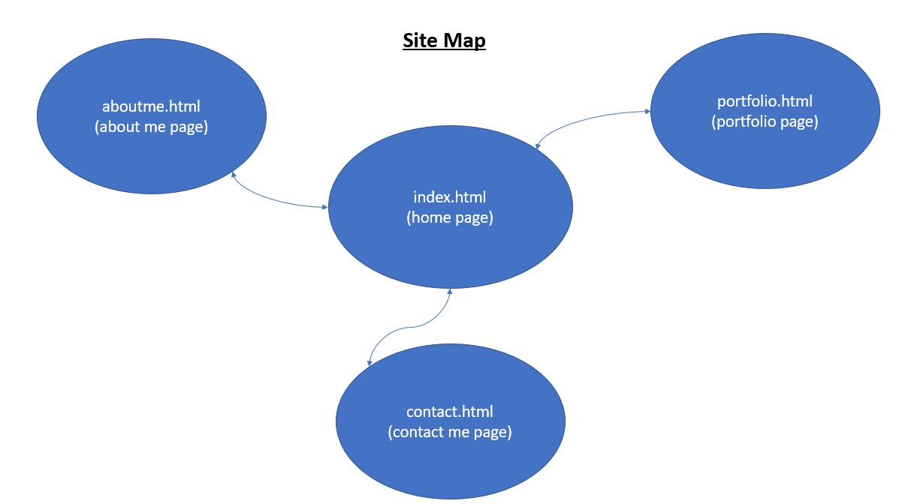
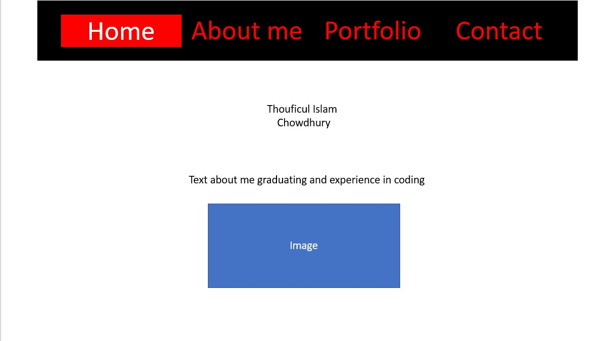
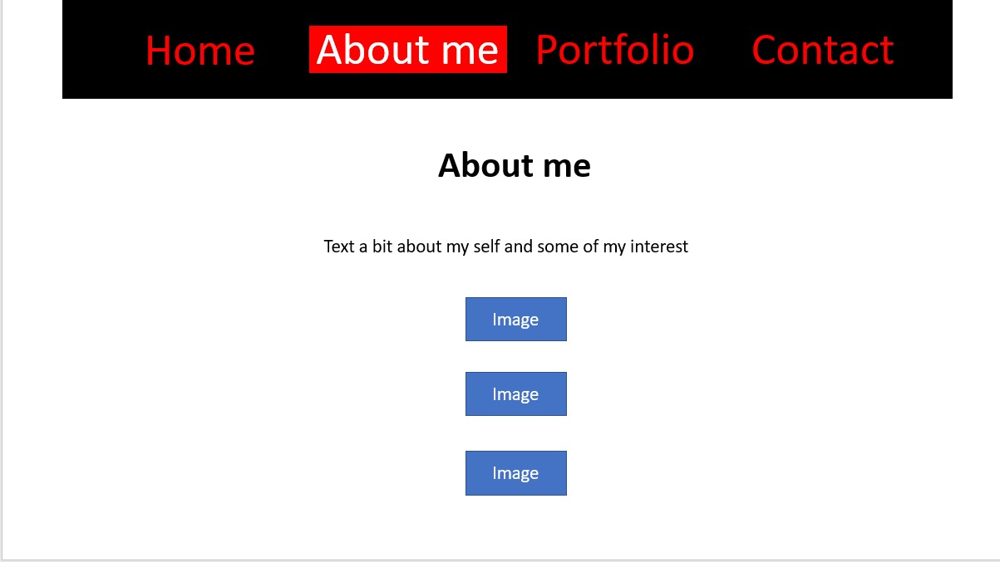
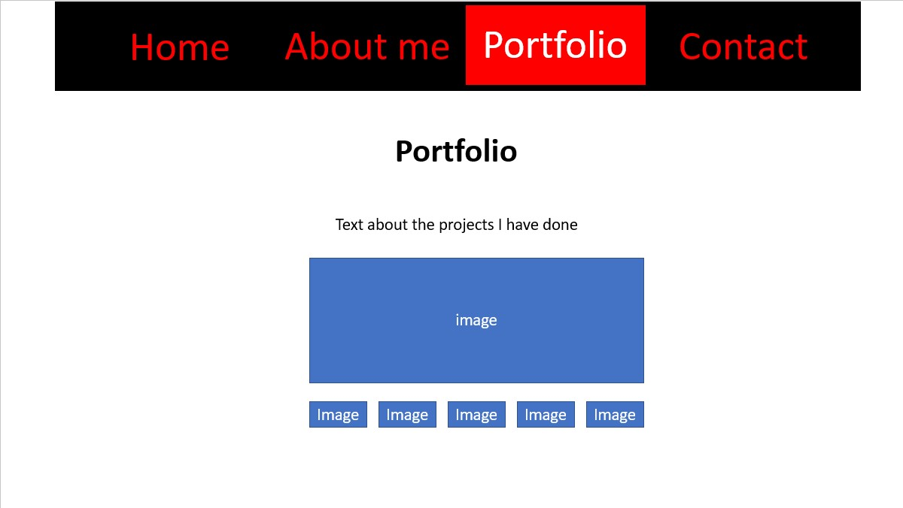
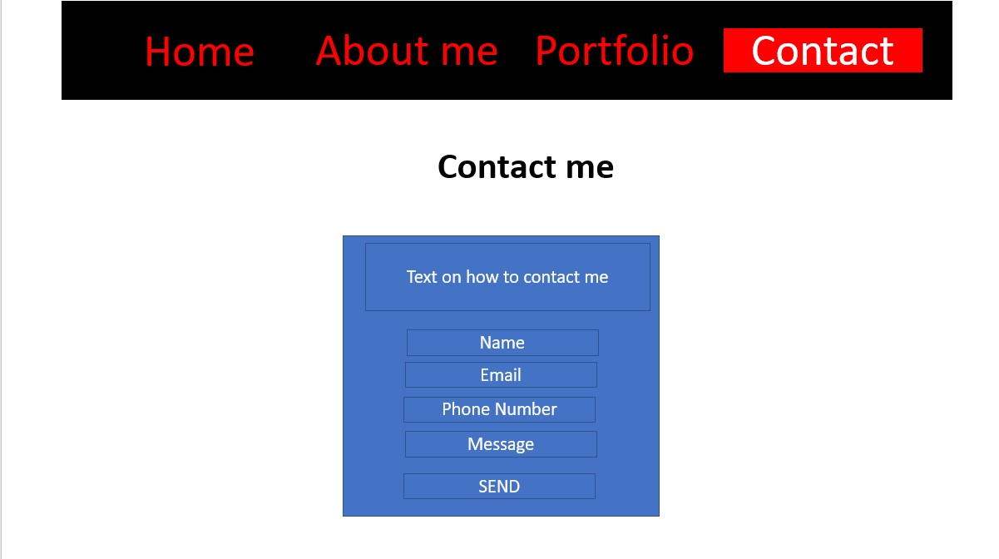

Introduction
How did you approach the subject?
The way I approached the subject was to look at and disect websites and portfolios and see the code they have used and understand each aspect of it and trying to recreate that function or feature. Doing this allowed me to brainstorm ideas I could add and what i wanted to add.
What does your site say about future you?
My future website will show that I have graduated from university and have become a games designer and will showcase what skills I have learned and the experiences that i have had with them. It will show the degree I have done and what my hobbies and interests are.
Background
Who is your audience?
My audience are future employers and companies. I want to show off my technical skills, which can attract more clients to work on more projects and expand my knowledge and experience further.
- Portfolio 1 - Robby Leonardo(and thoughts about it)
- Portfolio 2 - Neil Patel(and thoughts about it)
- Portfolio 3 - Jordy Ruiter(and thoughts about it)
Green - The use of javascript make the website very interactive, and using buttons makes it easier to navigate
Red - Using the keyboard to control the character can be very confusing when navigation, and the buttons aren't very clear on where they are as they blend in with the background.
Green - The navigation bar that is on the side stays as you scroll down the page and changes the colour for each section that you are currently viewing. Also the use of a banner that changes on a timely bases gives the user a quic overview of what he can do and what projects he has done to show for this.
Red - Some text is unclear as it is lost in the background of the website.
Green - When an image is clicked on in experience it comes out as a pop-up and cycle through othere images, Also, the use of the get in touch form allows people to send an email and get in touch with him and disuss new proects that they want to involve him on.
Red - When on different devices the layout of the website is compromised and squishes the elements too close together.
Resource on portfolio creation
The resources that I used were skillshare, youtube, W3schools, brackets and JQuery CDN.
Planning
- Accessibility aspect 1 - The first was to ensure that the navigation menu was available to users at all times and to never dissapear for any reason. This is to allow users of my website to be able to go back and read text again or look at images again.
- Accessibility aspect 2 - The second was to ensure that there was a clear way to know which page you were currently on. This will allow users to have a clear discerning factor apart from the header of the page to know what they are currently looking at.
- Accessibility aspect 3 - The third was to ensure that when users hovered over the navigation bar that they were able to discern which element of the website they are going to be viewing next or navigate to previous pages.
How have you made the site easy to navigate?
They way I have ensured that the website is easy to navigate is by making sure that the navigation bar was always present, highlighting which page they are on by changing the colour of the background and text of that page and being able to hover over different pages and make a decision on what they want to view.
Implementation
Learning
From making this website I have learnt that a lot of work goes into making website and that small animation take a lot of coding to do so. But I have also learnt how to use javascript and JQuery on a website to make certain action happen. For example, making the gallery for the portfolio page was difficult because I had to make sure that all of the images would be target to one and when clicked on they would change their position to the bigger picture. This is by using JQuery to allow the click function on the thumbnail and change the position of the image to that bigger area.
Libraries and other resources
The only library i have used is JQuery CDN and adding pictures for the different pages on my website.
Evaluation
What worked well?
- The first thing that went well was the navigation bar as I wa able to make sure that it never dissapeared. Making sure it showed the currently active page and hovering over the options would be highlight by a change in colour.
- The next was being able to add the pictures to the site to allow people to see what I can do and some of the interests that I had. Chaning the image sizes helped convey this.
- Adding an interactive gallery also went well because anytime i clicked on a different image it would load into the frame quickly and allow the image to be seen a lot more clearly than the thumbnail view.
- Having the contact-form also went well because people could get into contact with me and the design also went well because it was simple and subtle at the same time.
- The aethetics of the website look similar when on mobile and interaction is the same.
What might be improved?
- The images on the about me page could have been put in a grid with all three of the images instead of being in one long column.
- The navigation bar could be changed for when on mobile devices to be on side in a burger menu style as it eats into a lot of space on the top. It almost squishes the elements in to make it fit.
References
Appendix
Site Map
Wireframes
Homepage wireframe
About me page wireframe.
Portfolio page wireframe.
Contact me page wireframe.
Validator reports
Validation report home page

Validation report about me page

Validation portfolio page

Validation contact page